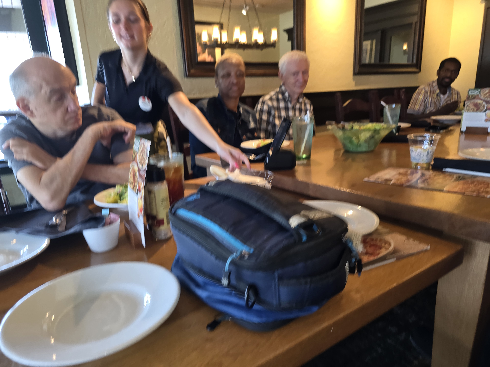
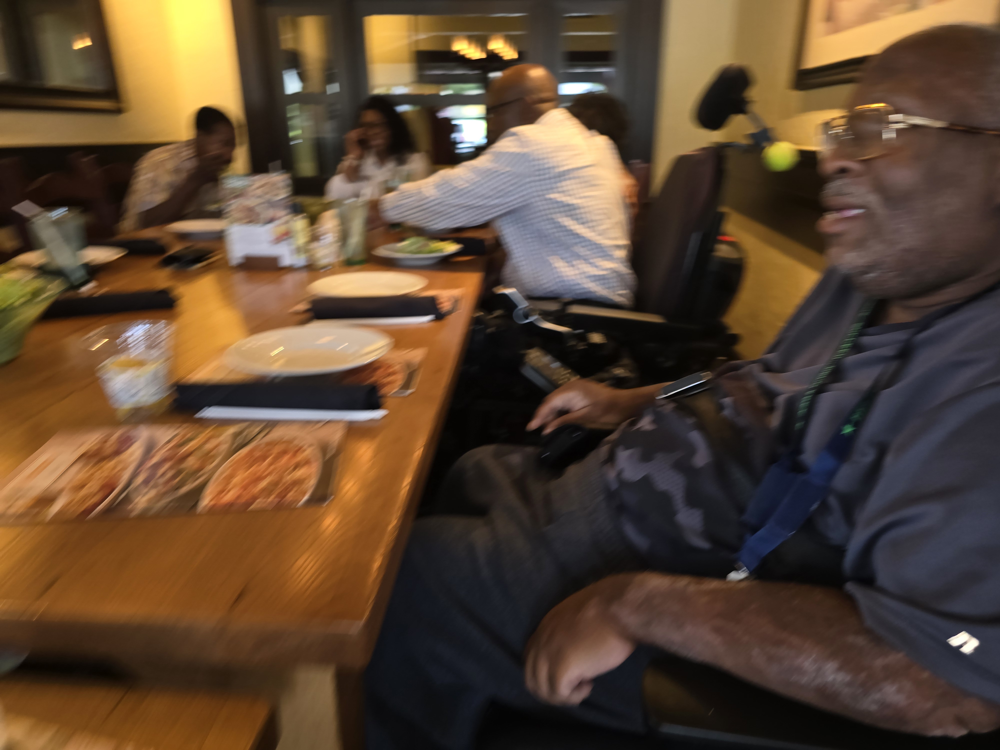
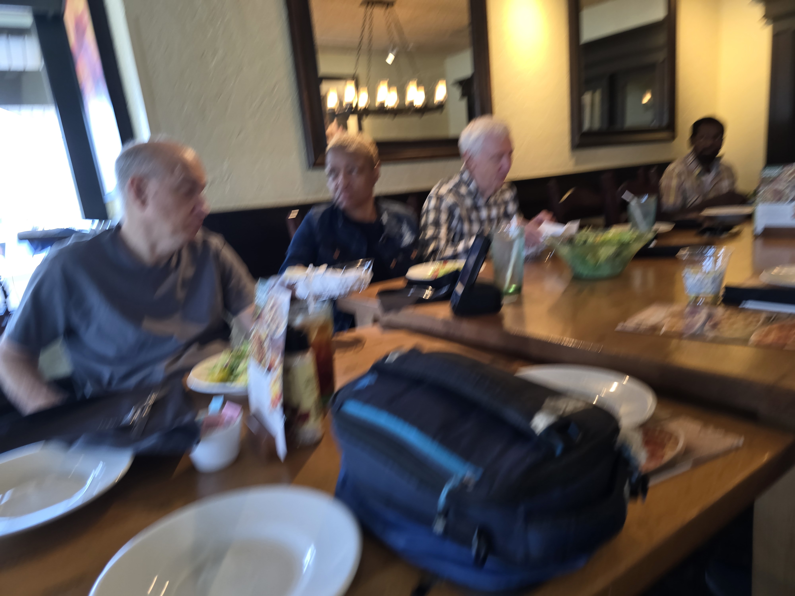

Spinal Injury Support Group in Mobile, Alabama (Free, Peer-Led)
Sponsored by:
Mission
Our mission is to empower individuals affected by Spinal Cord Injuries by providing emotional support, education, advocacy, and a sense of community. We strive to improve quality of life, promote independence and foster a sense of hope, resilience, and belonging.
How We Help
Our peer‑led group gathers on the fourth Monday of every month to exchange lived‑experience insights,
host guest therapists, and plan activities such as dining out at local restaurants, cheering on
wheelchair‑basketball games and other adaptive sports, and joining local or state demonstrations in support of the
Americans with Disabilities Act.
We also curate a local resource list that covers rehabilitation services,
transportation through the Wave Transit Mobility Assistance Program (MAP), and grants for durable
medical equipment across Mobile and the wider Gulf Coast. Whether you are newly injured or a seasoned survivor,
you'll discover practical help, genuine friendship, and a strong voice here.

We meet on the fourth Monday of every month and you can download the SCI support group flyer at the link below.
The spinal cord injury support group flyer
Our last meeting of the year was on November 24, 2025. We will be back in 2026, and below is the proposed schedule for next year. Dates and times are subject to change, so please call to confirm.
Spinal Cord Injury Group 2026 Meetings Schedule:
January 28ᵗʰ 2026 — 12:00 PM to 2:00 PM
Special Note:
People4People and the SCI support group will both meet on February 9ᵗʰ to hear from a guest speaker from Alabama ARISE.
February 9ᵗʰ 2026 — 12:00 PM to 2:00 PM
March 23ᵗʰ 2026 — 12:00 PM to 2:00 PM
April 29ᵗʰ 2026 — 12:00 PM to 2:00 PM
May 18ᵗʰ 2026 — 12:00 PM to 2:00 PM
June 24ᵗʰ 2026 — 12:00 PM to 2:00 PM
July 29ᵗʰ 2026 — 12:00 PM to 2:00 PM
August 24ᵗʰ 2026 — 12:00 PM to 2:00 PM
September 28ᵗʰ 2026 — 12:00 PM to 2:00 PM
October 26ᵗʰ 2026 — 12:00 PM to 2:00 PM
November 23ᵗʰ 2026 — Thanksgiving Dinner
December — Group does not meet. Merry Christmas.
Location:
Independent Living Center of Mobile
6750 Howells Ferry Road
Mobile, AL 36618
☎ (251) 460-0301
Time: 1:00 PM – 2:30 PM
Light refreshments will be served.
2026 has begun and with the new year comes new opportunities for growth and support. Our first meeting was held on January 26ᵗʰ, 2026.
Topics Included:
Issues regarding transportation within the surrounding areas.
Coming to terms with our injury and the journey it put us on.


July 26, 2026, Mayor Spiro Cheriogotis presented a proclamation at the Mobile City Council meeting recognizing the 36th anniversary of the Americans with Disabilities Act and ADA Awareness Day in the City of Mobile. The proclamation highlighted the importance of accessibility, inclusion, independence, and equal opportunity for people with disabilities throughout the community.



On Monday, July 27ᵗʰ, the Spinal Injury Support Group in Mobile, Alabama, met at:
The Olive Garden
3701 Airport Blvd
Mobile, AL 36608
In remembrance of recently deceased member Ocie Hunt.
He will be greatly missed.